Chapter 15 Matching in Observational Studies
Matching has a long history in empirical research. W. Cochran and D. Rubin popularized it in statistical causal inference. Cochran and Rubin, (1973) is an early review paper. Rubin, 2006b () collects Rubin’s contributions to this topic. This chapter also discusses modern contributions by Abadie and Imbens, (2006); Abadie and Imbens, (2008); Abadie and Imbens, (2011) based on the asymptotic analysis of matching estimators.
75 A simple starting point: many more control units
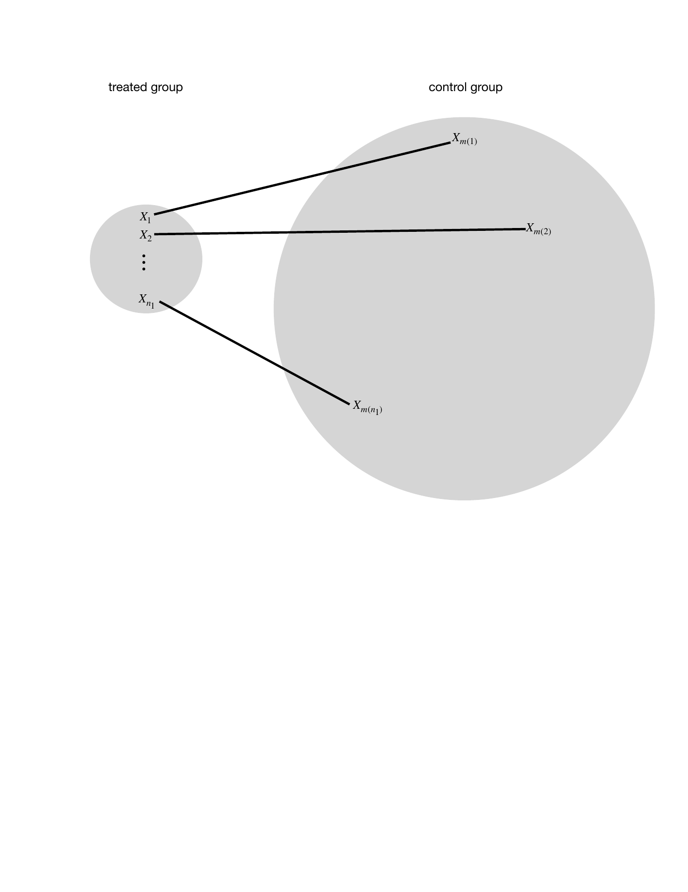
Figure 20 illustrates the basic idea of matching in treatment-control observational studies.
Consider a simple case with the number of control units  being much larger than the number of treated units
being much larger than the number of treated units  . For unit
. For unit
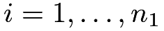
in the treated group, we find a unit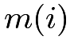
in the control group such that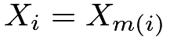
. In the ideal case, we have exact matches. Therefore, the units within a matched pair have the same propensity score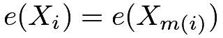
. Consequently, conditional on the event that one unit receives the treatment and the other receives the control, the probability of unit receiving the treatment and unit receiving the control is
receiving the treatment and unit receiving the control is
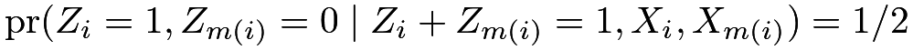 |
by a symmetry argument.35 That is, the treatment assignment is identical to the MPE conditioning on the covariates and the event that each pair has a treated unit and a control unit. So we can analyze the exactly matched observational study as if it is an MPE, using either the FRT or the Neymanian approach in Chapter 7. This gives us inference on the causal effect on the treated units.
We can also find multiple control units for each treated unit. In general, we can find
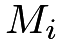
matched control units for the treated unit. When the ’s vary, it is called the variable-ratio matching (Ming and Rosenbaum,, 2000; Ming and Rosenbaum,, 2001; Pimentel et al.,, 2015). With perfect matching, the treatment assignment mechanism is identical to the general matched experiment discussed in Section 41. We can use the analytic results in that section to analyze the matched observational study.
Rosenbaum, 2002b () advocated the above analysis strategy. In most observational studies, however, does not hold for all units. The above reasoning for FRT does not hold. Recently, Guo and Rothenhäusler, (2022) reported negative results on the consequence of inexact matching in FRT. This is a warning of this strategy.
76 A more complicated but realistic scenario
Even if the control group is large, we often do not have exact matches. What we can achieve is that
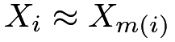
or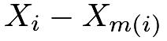
is small under some distance metric. So we have only approximate matches. For example, we define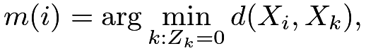 |
where
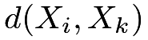
measures the distance between and
and 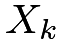
. Some canonical choices of the distance are the Euclidean distance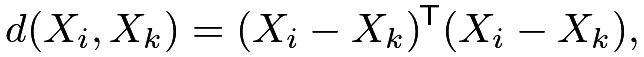 |
and the Mahalanobis distance
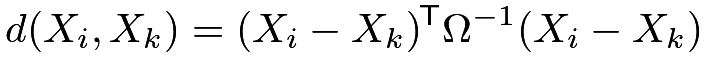 |
with
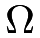
being the sample covariance matrix of the’s from the whole population or only the control group.
I review some subtle issues about matching below. See Stuart, (2010) for a review paper.
- 1.
(one-to-one or one-to-
 matching)
The above discussion focused on one-to-one matching. We can also extend the discussion to one-to- matching.
matching)
The above discussion focused on one-to-one matching. We can also extend the discussion to one-to- matching. - 2.
I focus on matching with replacement but some practitioners prefer matching without replacement. If the pool of control units is large, these two methods will not differ too much for the final result. Matching with replacement is computationally more convenient, but matching without replacement involves computationally intensive discrete optimization. Matching with replacement usually gives matches of higher quality but it introduces dependence by using the same units multiple times. In contrast, the advantage of matching without replacement is the independence of matched units and the simplicity in the subsequent data analysis.
- 3.
Because of the residual covariate imbalance within matched pairs, it is crucial to use covariate adjustment when analyzing the data. In this case, covariate adjustment is not only for efficiency gain but also for bias correction.
- 4.
If
 is “high dimensional”, it is likely that is too large for some unit in the treated group and for all choices of the units in the control group. If this happens, we may have to drop some units that are hard to find matches. By doing this, we effectively change the study population of interest.
is “high dimensional”, it is likely that is too large for some unit in the treated group and for all choices of the units in the control group. If this happens, we may have to drop some units that are hard to find matches. By doing this, we effectively change the study population of interest. - 5.
It is hard to avoid the above problem. For example, if
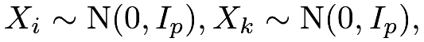
and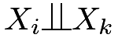
, then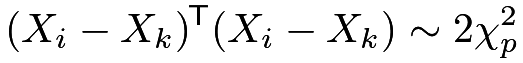
which has mean
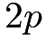
and variance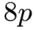
(see Chapter 30.A.3). Theory shows that with large , imperfect matching causes a large bias in causal effect estimation.
This suggests that if is large, we must do some dimension reduction before matching.
Rosenbaum and Rubin, 1983b () proposed to use matching based on the propensity score. With the estimated propensity score, we find pairs of units
, imperfect matching causes a large bias in causal effect estimation.
This suggests that if is large, we must do some dimension reduction before matching.
Rosenbaum and Rubin, 1983b () proposed to use matching based on the propensity score. With the estimated propensity score, we find pairs of units 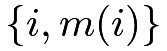
with small values of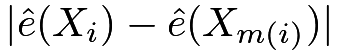
or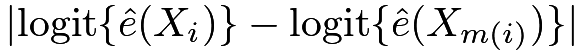
36, i.e., we have a one-dimensional matching problem.
77 Matching estimator for the average causal effect
In a sequence of papers, Abadie and Imbens (AI) rigorously characterized the asymptotic properties of the matching estimator and proposed the corresponding large-sample confidence intervals for the average causal effect. They chose the standard setup for observational studies with
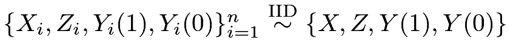
.77.1 Point estimation and bias correction
AI focused on  - matching with replacement. For a treated unit , we can simply impute the potential outcome under the treatment as
- matching with replacement. For a treated unit , we can simply impute the potential outcome under the treatment as
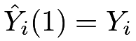
, and impute the potential outcome under the control as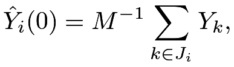 |
where
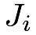
is the set of matched units from the control group for unit. For example, we can compute for all  in the control group, and then define as the indices of with the smallest values of .
in the control group, and then define as the indices of with the smallest values of .
For a control unit , we simply impute the potential outcome under the control as
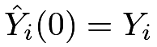
, and impute the potential outcome under the treatment as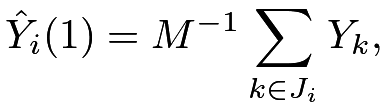 |
where is the set of matched units from the treatment group for unit .
The matching estimator is
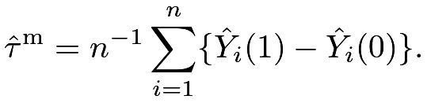 |
AI showed that
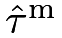
has non-negligible bias especially when is multidimensional and the number of control units is comparable to the number of treated units. Through some technical derivations, they proposed the following estimator for the bias:
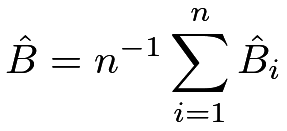 |
where
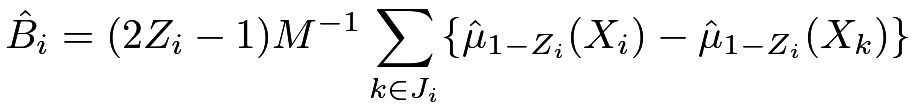 |
with
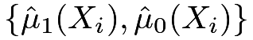
being the predicted outcomes by, for example, OLS fits. For a treated unit with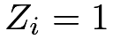
, the estimated bias is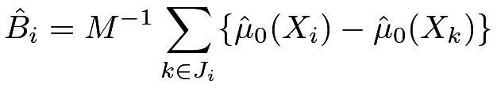 |
which corrects the discrepancy in predicted control potential outcomes due to the mismatch in covariates; for a control unit with
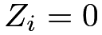
, the estimated bias is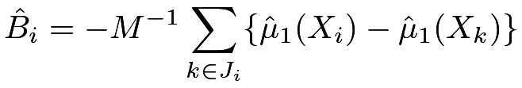 |
which corrects the discrepancy in predicted treated potential outcomes due to the mismatch in covariates.
The final bias-corrected matching estimator is
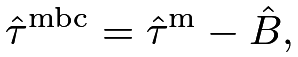 |
which has the following linear expansion.
Proposition 15.1
We have
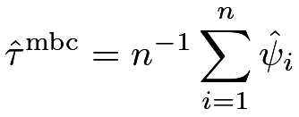 |
(79) |
where
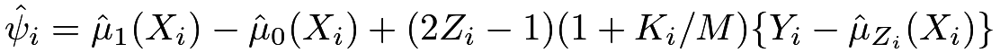 |
with 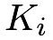 is used as a match.
The linear expansion in Proposition 15.1 follows from simple but tedious algebra. I leave its proof as Problem 15.1. The linear expansion motivates a simple variance estimator
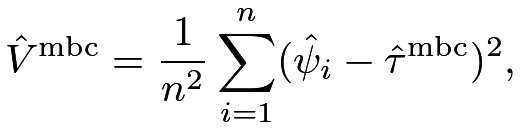 |
by viewing
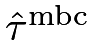
as sample averages of the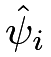
’s. Abadie and Imbens, (2008) first showed that the simple bootstrap by resampling the original data does not work for estimating the variance of the matching estimators, but their proposed variance estimation procedure is not easy to implement. Otsu and Rai, (2017) proposed to bootstrap the ’s in the linear expansion. However, Otsu and Rai, (2017)’s bootstrap essentially yields the variance estimator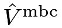
, which is simple to calculate.77.2 Connection with the doubly robust estimators
The bias-corrected matching estimators and the doubly robust estimators are closely related. They both equal the outcome regression estimator with some modifications based on the residuals
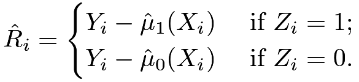 |
For the average causal effect  , recall the outcome regression estimator
, recall the outcome regression estimator
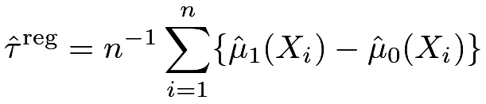 |
and the doubly robust estimator
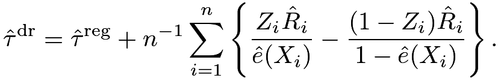 |
Furthermore, we can verify that has a form similar to  .
.
Proposition 15.2
The bias-corrected matching estimator for equals
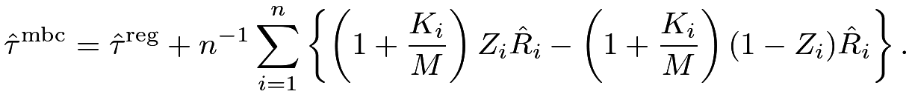 |
I leave the proof of Proposition 15.2 as Problem 15.2. From Proposition 15.2, we can view matching as a nonparametric method to estimate the propensity score, and the resulting bias-corrected matching estimator as a doubly robust estimator. For instance, should be close to . When a treated unit has a small , the resulting weight based on the estimated propensity score will be large, and at the same time, it will be matched to many control units, resulting in large and thus large . However, this connection also raised an obvious question regarding matching. With a fixed , the estimator for  will be very noisy. Allowing to grow with the sampling size is likely to improve the matching-based nonparametric estimator for the propensity score and thus improve the asymptotic properties of the matching and bias-corrected matching estimators. Lin et al., (2023) provided a formal theory that once we allow to grow at a proper rate, the bias-corrected matching estimator can achieve similar properties as the doubly robust estimator.
will be very noisy. Allowing to grow with the sampling size is likely to improve the matching-based nonparametric estimator for the propensity score and thus improve the asymptotic properties of the matching and bias-corrected matching estimators. Lin et al., (2023) provided a formal theory that once we allow to grow at a proper rate, the bias-corrected matching estimator can achieve similar properties as the doubly robust estimator.
78 Matching estimator for the average causal effect on the treated
For the average causal effect on the treated
 |
we only need to impute the missing potential outcomes under control for all the treated units, resulting in the following estimator
Again it is biased with multidimensional .
Otsu and Rai, (2017) propose to estimate its bias by
where
corrects the bias due to the mismatch of covariates for a treated unit with
The final bias-corrected estimator is
which has the following linear expansion.
Proposition 15.3
We have
| (80) |
where
I leave the proof to Problem 15.1. Motivated by Otsu and Rai, (2017), we can view as multiplied by the sample average of the ’s, so an intuitive variance estimator is
Similar to the discussion in Section 77.2, we can compare the doubly robust and bias-corrected matching estimators with the outcome regression estimator.
For the average causal effect on the treated units  , recall the outcome regression estimator
, recall the outcome regression estimator
and the doubly robust estimator
Furthermore, we can verify that has a form similar to  .
.
Proposition 15.4
The bias correction matching estimator for equals
79 A case study
79.1 Experimental data
Now I revisit the LaLonde data using Sekhon, (2011)’s Matching package. We have used this package several times for the dataset lalonde, and now we will use its key function Match. The experimental part gives us the following results:
All regression estimators show positive significant results on the job training program. We can analyze the data as if it is an observational study based on 1-1 matching, yielding the following results:
Both the point estimator and standard error increase, but qualitatively, the conclusion remains the same.
79.2 Observational data
Then I revisit the observational counterpart of the data:
If we use simple OLS estimators, the results are far from the experimental benchmark and are sensitive to the specification of the regression:
However, if we use 1-1 matching, the results almost recover those based on the experimental data:
Ignoring the ties in the matched data, we can also use the matched-pairs analysis, which again yields results similar to those based on the experimental data:
79.3 Covariate balance checks
Moreover, we can use simple OLS to check covariate balance. Before matching, the covariates are highly imbalanced, signified by many stars associated with the coefficients.
However, after matching, the covariates are well-balanced, signified by the absence of stars for all coefficients.
80 Discussion
With many covariates, matching based on the original covariates may suffer from the curse of dimensionality. Rosenbaum and Rubin, 1983b () suggested to use matching based on the estimated propensity score. Abadie and Imbens, (2016) provided a form theory for this strategy.
81 Homework Problems
15.1 Linear expansions of the bias-corrected estimators
15.2 Doubly robust form of the bias-corrected matching estimator for
Prove Proposition 15.2.
15.3 Doubly robust form of the bias-corrected matching estimator for
Prove Proposition 15.4.
15.4 Revisit Example 10.3
Analyze the dataset in Example 10.3 using the matching estimator. Compare the results with previous results. You should check the covariate balance before and after matching. You can also choose a different number of matches for the matching estimator. Moreover, you can even apply various estimators to the matched data. Are your results sensitive to your choices?
15.5 Revisit Chapter 79
Chapter 79 analyzed the LaLonde observational study using matching. Matching performs well because it gives an estimator that is close to the experimental gold standard. Reanalyze the data using the outcome regression, propensity score stratification, two IPW, and the doubly robust estimators. Compare the results to the matching estimator and to the estimator from the experimental gold standard.
Note that you have many choices. For example, the number of strata for stratification and the threshold to trim to data based on the estimated propensity scores. You may consider fitting different propensity score and outcome models, e.g., including some quadratic terms of the basic covariates. You can even apply these estimators to the matched data.
This is a classic dataset and hundreds of papers have used it. You can read some references (Dehejia and Wahba,, 1999; Hainmueller,, 2012) and you can also be creative in your data analysis.
15.6 Data re-analyses
Ho et al., (2007) is an influential paper in political science, based on which the authors have developed an R package MatchIt (Ho et al.,, 2011). Ho et al., (2007) analyzed two datasets, both of which are available from the Harvard Dataverse.
Re-analyze these two datasets using the methods discussed so far. You can also try other methods as long as you can justify them.
15.7 Recommended reading
The literature on matching estimators is massive, and three excellent review papers are Sekhon, (2009), Stuart, (2010), and Imbens, (2015).
脚注
35. The rigorous argument is

36. Define . The logit function is a map from to .